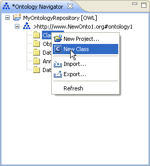
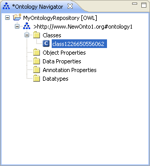
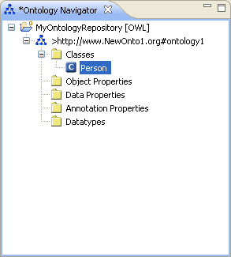

Create a Class
To create a class, proceed as follows:
- Select an ontology.
- Select the Classes folder.
Right-click the Classes folder and select New Class.

- Rename the class.
The class will be created with an automatically generated name.
Rename the class by changing its name in the Ontology Navigator.

- Press Return.
The class will be renamed.

- Edit the class.
The newly created class will be displayed in the Entity Properties panel.
You can now continue to specify the characteristics of the class.
For more information, see
OWL Classes.